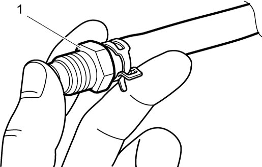
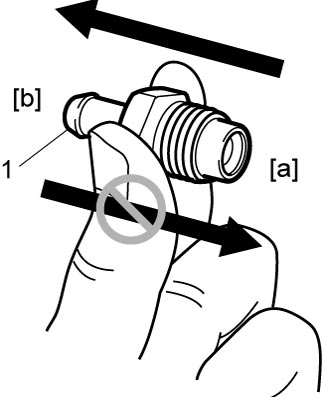

1B
| PCV Valve Inspection |
1)Remove PCV valve from cylinder head cover and install plug to head cover hole.
2)Run engine at idle speed.
3)Place finger over end of PCV valve (1) to check for vacuum.
If no vacuum is felt, check valve for clogging. Replace PCV valve if defective.

If no vacuum is felt, check valve for clogging. Replace PCV valve if defective.

 "Expand image")
4)Stop engine and remove PCV valve (1).
Install clean hose to valve and check that there is air flow when blowing air into hose from [a] to [b] and that there is no air flow when blowing air into hose from [b] to [a] as shown in figure.
If faulty condition is found, replace PCV valve.
Install clean hose to valve and check that there is air flow when blowing air into hose from [a] to [b] and that there is no air flow when blowing air into hose from [b] to [a] as shown in figure.
If faulty condition is found, replace PCV valve.

 "Expand image")
5)Remove plug to head cover hole.
6)Install PCV valve.